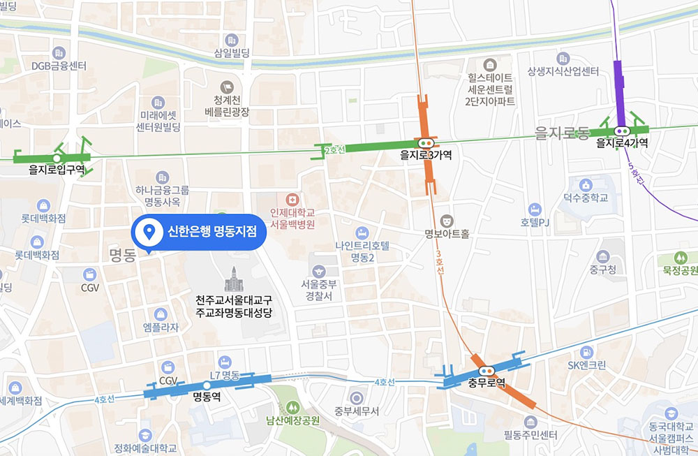
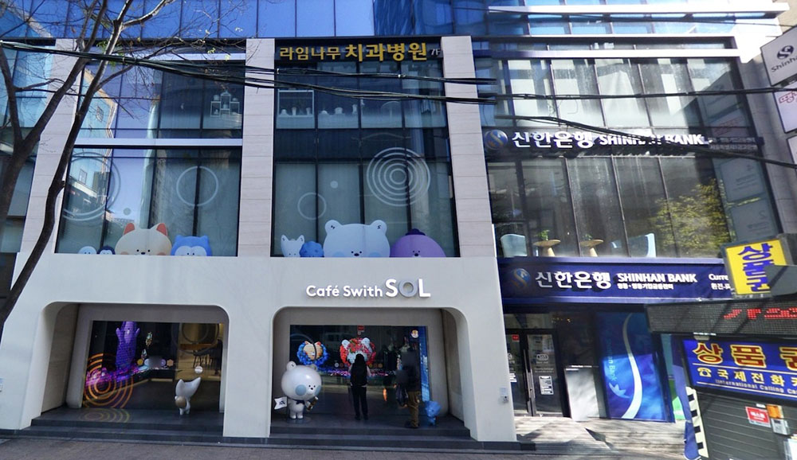
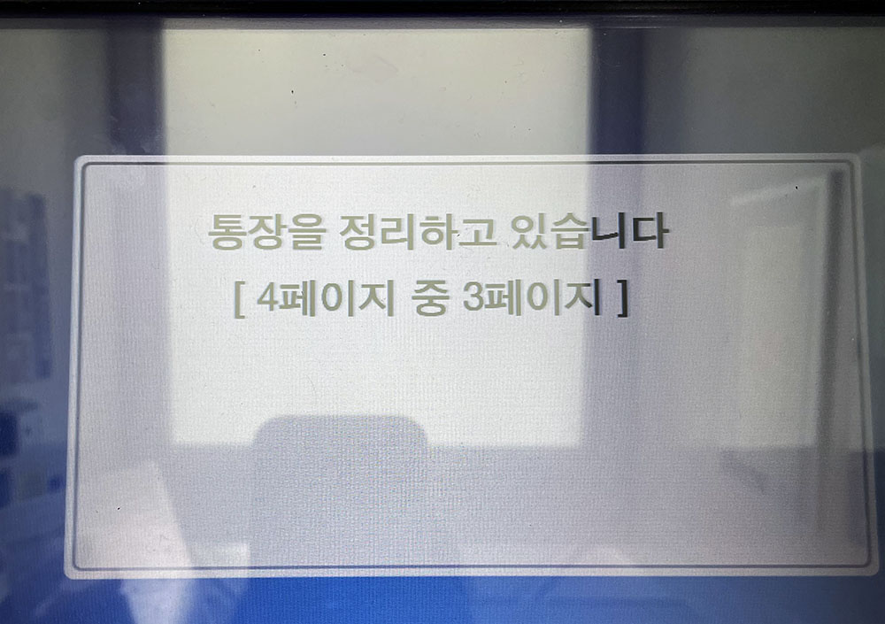
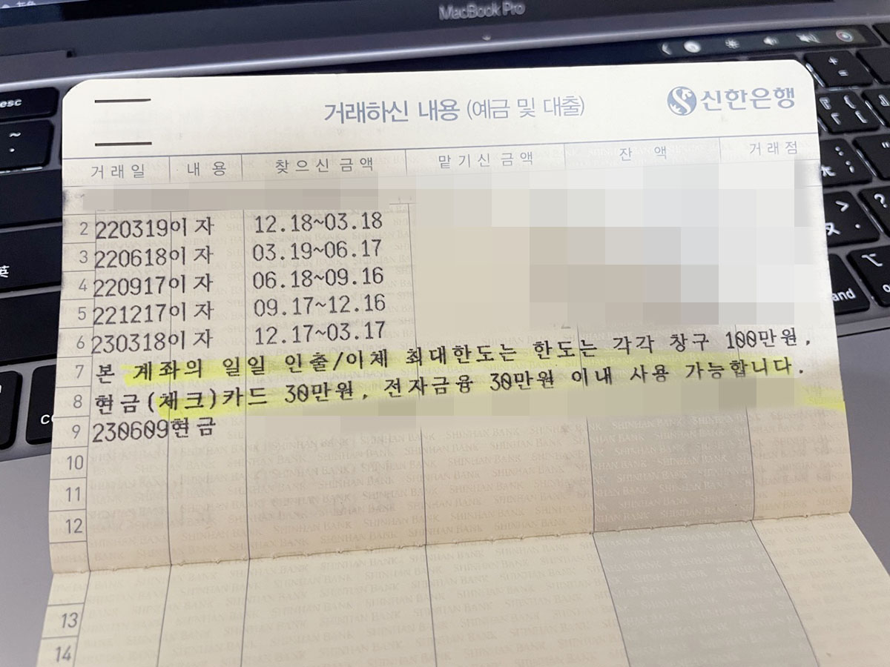
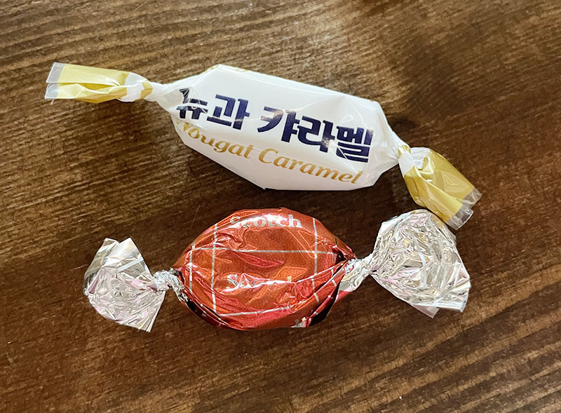

[韓國] 將新韓銀行帳戶身份文件從外國人登錄證轉換為護照
發布於 June 20, 2023 • 6 分鐘 • 2957 字 • 文章分類:
2014 年從韓國回台灣的時候也是萬萬沒想到竟然會時隔九年才再度踏上韓國國土，這次臨出發前翻出了以前唸書時申請的銀行存摺，抱持著說不定還可以用呢？的心態一起帶著他飛首爾了，沒想到真的還可以補摺呢…
先直接說結論
- 我成功把帳戶身份從外國人登錄證換成護照
- 沒有外國人登錄證所以不會發新的提款卡給我
- 有存摺只能存錢不能領錢，領錢需要臨櫃
- 如果要申請使用網銀除了護照還需要帶台灣身分證
那麼以下正文開始～
九年前離開韓國的時候戶頭裡還留有一些錢，當然後續因為網路購物什麼的都花得差不多了，帳戶也因為太久沒有金流進出而收到 mail 通知被凍結。這次出發去韓國前有先上網搜尋了一些資料，大部分的人可以把帳戶身份從外國人登錄證轉為護照，不過外國人登錄證在你簽證到期前最後一次出境韓國時是會被海關收回的，因此你會是手上沒有原本身份文件的狀態，有些銀行可能會拒絕幫你更新，需要回出入境管理局去申請「外國人登錄證事實證明」（외국인등록 사실증명），來驗證你曾經持有過這個外國人登錄證號碼。出入境管理局在木洞（聽說搬到麻谷站，天啊更遠了），加上過去的經驗跑一趟至少會花掉半天時間，這次作為觀光客我是絕對沒有想要去的🤣
想著雖然錢不多但也是錢，加上想了解一下這個帳戶到底還能不能用，抱持著隨緣啦路上看到新韓就去刷一下簿子、插個卡（？）看看狀況的心情，把護照、過期的提款卡跟轉帳會用到的保安卡都帶上了。
去明洞的時候是禮拜五，因為前一站在廣藏市場吃太飽（欸）決定散步過去，從乙支路四街方向往明洞走，一進到明洞的鬧區範圍馬上就看到一間新韓銀行。

明洞這間新韓銀行一樓是他們的 Cafe with SOL 跟 ATM，辦理銀行業務要上二樓，我忘記拍照了就拿 naver map 上的圖吧！

右側的門進去就是一排大概三四台 ATM，可以存提款跟補摺，要辦理業務則是一進門右手邊的樓梯直接上二樓。我抱持著試試看的心情按下補摺按鈕插入存摺，結果，登登！可以刷簿子沒問題～～

看到這個畫面瞬間夢回十年前每次補摺都要等很久的刷簿子地獄🤣
韓國很早就流行不用現金交易，就連市場裡面的小攤子也都可以刷卡，我們的提款卡都是可以在韓國當信用卡刷的「체크카드」（Check Card），作用和台灣的 VISA 金融卡一樣，銀行戶頭裡面有多少錢才可以刷多少，只不過新韓銀行發行的是 MasterCard。
因為刷卡很方便，所以我們出門不管是吃飯、喝咖啡還是買生活用品幾乎都是直接刷卡，導致每次補摺的時候都要在提款機前面站半天等他刷完，我到韓國生活不到一年就換了一本新存摺🤣
好不容易整理完存摺了（韓文的補摺「통장정리」直接翻譯就叫做存摺整理），想著雖然我的 Check Card 在 2018年3月就到期了，但台灣我記得 VISA 金融卡期限到只是不能刷卡，金融卡功能還是可以正常使用，就插卡試試看能不能提款吧！
結果 ATM 就告訴我卡片過期啦不能用啦～～～
這次到韓國因為行程排得很鬆散輕鬆，加上剛好是禮拜五銀行有上班，想了想請朋友先去附近閒晃，我臨櫃問一下。
一上二樓馬上門口親切的大叔就問我要辦什麼業務，跟大叔說了我以前留學時期有辦過新韓帳戶，但現在帳戶已經凍結了，不確定能不能繼續使用，大叔馬上幫我抽了張號碼牌，跟我說可以直接問問看就引導我去櫃檯。
櫃檯也是一位非常親切的姐姐，聽了我的來意之後，跟我說因為疫情的關係很多外國人沒有辦法來韓國所以有很多帳戶被凍結的狀況，問我外國人登錄證有在身上嗎？我說過期了，這次來就是想問問能不能換成護照，櫃檯姐姐告訴我如果是沒有登錄證的話可以換成護照沒問題，但是金額進出會有比較嚴格的限制，每天提款或轉帳只能臨櫃100萬、電子金融30萬以內，這樣可以接受嗎？我說好。然後她又指了一下我手上拿著的提款卡說，這個是 Check Card 嗎？我說對，她說因為沒有外國人登錄證，這個也沒有辦法發給我了🥲

姐姐問我還記不記得登錄證號碼？我說記得，然後她拿出一張申請書給我填寫，看了一下是要變更證件的文件，左邊寫上我的外國人登錄證號碼，右邊寫上我的護照號碼簽名之後，除了最後需要在電子螢幕上勾一些項目、寫變更（或是開戶？）原因，再簽個名基本上就沒我什麼事了XD
因為當初開戶的時候有留外國人登錄證的影本在銀行，所以我有看到姐姐印了我的外國人登錄證影本出來，然後把我的護照拿去掃描影印之類的。之前看過有人因為沒有外國人登錄證被拒絕轉換，最後只能結清解除帳戶，我猜是看行員願不願意幫你處理吧，畢竟看他們那邊留存的名字和登錄證照片跟護照比對應該也能知道是同一個人，可能有些行員不願意承擔這個風險，總之我還算蠻幸運的一切都非常順利。
在幫我辦理的途中，剛剛門口的大叔還拿了兩顆糖來給我，人真的好好😆

辦完之後，姐姐問我 check card 要幫我銷毀嗎？我問他說可以作為紀念保留嗎？她說當然可以我就留下來啦！又問了姐姐那我沒有卡片的話，我可以用存摺領錢嗎？她說用存摺只能存款不能領錢，領錢的話一定要來櫃檯。我又問那還可以用手機網銀嗎？她問我還有韓國的電話嗎？我說沒有了，她說那這樣沒辦法做實名認證，但我如果有帶台灣身分證的話，他可以幫我弄認證書什麼的，又要我坐下來XD
但我想想覺得有點麻煩，而且因為帳戶的電子限額30萬，說真的能做的事情也很有限（！？），就跟姐姐說那還是幫我把存摺裡的錢領出來，之後我來韓國如果有需要再來辦，然後她就幫我把餘額都領出來又提醒我要來辦的話要記得除了護照還要帶身分證喔！還有如果超過一年沒有金額進出的話帳戶又會被凍結，要來櫃檯再做一次跟今天一樣的事情🤣
喔對了，韓國領錢就算是臨櫃也只能領到鈔票喔，所以一千以下的零頭好像領不出來😆
總之算很順利地結束了，看了一下跟朋友的對話時間，我從下午 1:25 左右進新韓銀行補摺，到上樓辦完這一切也才 1:50，半小時之內解決！很棒！
之後如果會比較頻繁往來韓國的話還是看看能不能弄一個實名認證的電話吧！因為網路交易安全跟網路惡評的關係，韓國這幾年不管做任何事情幾乎都需要手機實名驗證或是 I-PIN，說到這才想到我好像應該直接在新韓問姐姐是不是我弄了網銀就可以申請 I-PIN 啊……在那麼一個風和日麗、工作人員都很和藹善良又沒有人排隊的時候，多適合把這一切都弄好啊QQQQQQQ
聽說現在韓國對外國人用護照開戶的限制又更嚴格了，以前大家還會推薦對外國人友善的「우리은행」（Woori Bank，友利銀行，우리就是大家看韓劇常聽到的屋哩（我們）啦～），但現在好像友利銀行外國人開戶也不是這麼容易了，所以原本就擁有的帳戶還是要好好珍惜QQ
如果現在在韓國工作或唸書的人，在外國人登錄證過期回台灣前就可以去銀行轉換成護照了。不過如果持續會往來韓國，銀行一直有金額進出的話，帳戶不會被凍結不換好像也可以，反而額度還可以維持QQ 只是 check card 應該是只有五年效期，到期了還是得臨櫃看能不能換囉～
總之，我的新韓銀行開戶身份從外國人登錄證轉換為台灣護照的過程就是這麼輕鬆簡單（？），只需要會韓文就可以（？？），給有需要的人參考看看囉！